█
 Articles
Articles
These blogs will contain the musings of a very weird old rat lady, and mabye other insightful things.
How I Setup Gentoo KDE/Windows 10 Dualboot.
2024-05-28
I recently got a new SSD for my Elitebook 820. While it did run Debian 12 before on its archaic 320GB Spinning HDD, this new SSD should modernize it and make it. So whats more taxing for this computer and me than running a bloated OS and an OS you have to compile everything for (including sanity)? Using both at the same time!
This blog will entail the steps I took to dualboot Windows 10 and Gentoo Linux, using the KDE Desktop Environment, on Systemd with Flatpak, Wayland and Pipewire/Portals support.

The Specimen
For this demonstration, I will be installing Gentoo/Windows onto my HP Elitebook G820. The Specs Are:- CPU: Intel i5-4300U
- RAM: 8GB DDR3
- GPU: Intel HD 4400
- Drive Space: 120GB SSD
Preparations
To start, you will need 3 things downloaded from another computer.- A Windows 10 ISO. This can be obtained from Microsoft's Offical Website.
- A Live Linux USB for installing Gentoo from. While you are free to use other Linux Distros, since Gentoo can be bootstrapped from pretty much any exisiting Linux Distro, I will be using the official Gentoo Minimal USB, so I only have a CLI interface to reduce overhead - important for when we are full speed ahead compiling software later! You can grab the Gentoo Minimal Live USB Here.
- A USB Stick, and Ventoy for putting both the ISO files onto one USB Stick.
Once you have obtained all of these files, we can get started!
Getting Setup
The next steps is getting Ventoy setup. This will slightly difference on if you are on Windows Or Linux. If you already know how to use Ventoy you can skip to here.
Linux
- Download the Linux tar.gz from here
- Extract the file once it is done downloading, and enter the extracted file created. It should look something like this. 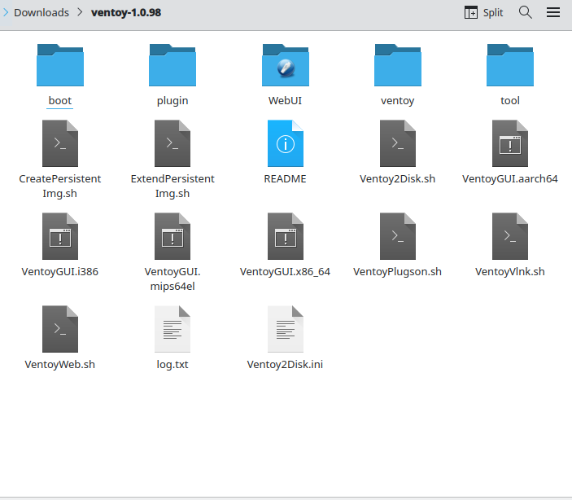
- Run the file named "VentoyGUI.x86_64". You may need to make it executable, which can be done by right clicking on it and checking its properties if you are using GNOME or KDE, or running the following command:
- In the following window, select your USB stick in the button labelled 1, and click "Install" on the button labelled 2. Press OK on the following two windows that popup. 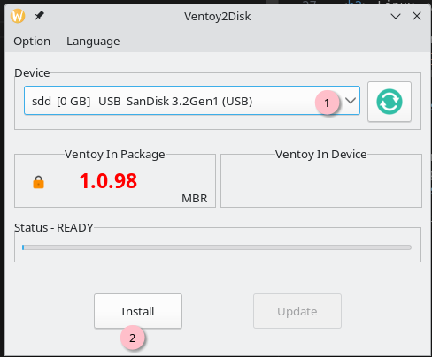
- Now Ventoy Is Installed, navigate to the new partition named "Ventoy", and place both the Windows and Gentoo ISOs in this partition. Once they are added, remove the USB drive from your computer and place it into the system you wish to install the two OSes onto. 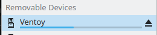 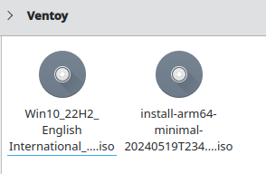
sudo chmod +x ./VentoyGUI.x86_64 Windows
- Download the Windows zip from here.
- Extract the file once it is done downloading, and enter the extracted file created. It should look something like this. 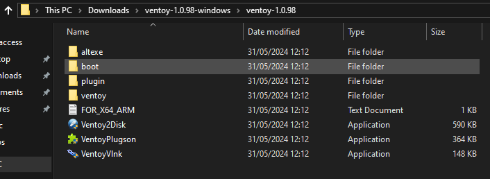
- Run the file named "Ventoy2Disk" . UAC will prompt you if you want to run the app.
- In the following window, select your USB stick in the button list at the top and click "Install" at the bottom. Press OK on the following two windows that popup. 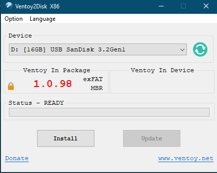
- Now Ventoy Is Installed, navigate to the new partition named "Ventoy", which should be your D:\ or similar, and then place both the Windows and Gentoo ISOs in this partiton. Once they are added, remove the USB drive from your computer and place it into the system you wish to install the two OSes onto. 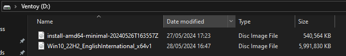
Once Ventoy Is Installed, Boot up the target machine and boot into the Ventoy USB using your computers boot menu. Navigate down to the Windows ISO using the arrow keys and press enter twice. Now go ahead and get Windows 10 installed. Do not attempt to rush ahead and install Gentoo first, it is much less hassle and headache to install Windows 10 first then install Gentoo (this really goes for dualbooting any Windows and Linux).
If you are reading this, I am guessing you know how to install Windows 10. Its not a pleasant installer but its easy all things considered.
Once Windows 10 is installed, make sure to disable fast boot as it can mess with booting our other Linux install. This can be done by:
- Search For "Edit Power Plan" in the search bar. 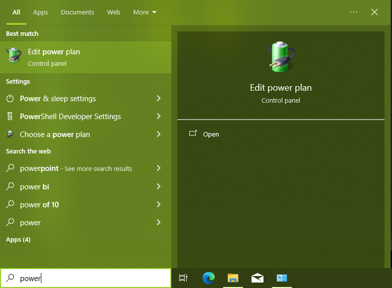
- Go To "Power Options" in the top bar
- Click "Choose what the power buttons do" 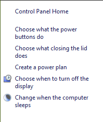
- Click on "Change Settings that are currently unavailable 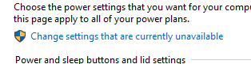
- Untick "Turn on fast start-up" and Save Changes
Before we head into Gentoo, we need to shrink Windows 10s partition so we have room to install Gentoo onto.
- Search For "Disk Management" in the search bar. 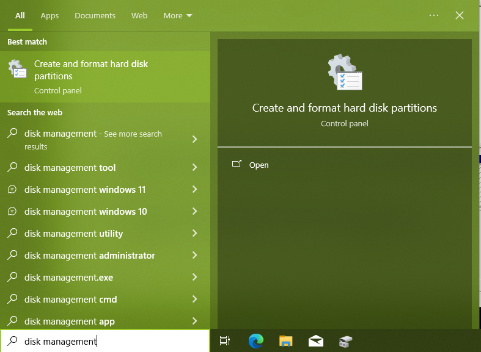
- Left-Click on your Windows 10 C: Partition, and press shrink volume 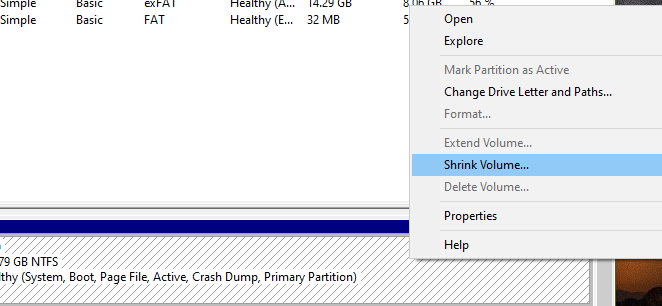
- Enter in your desired size in MBs of your Gentoo Partition.
- Once shrunk, you should have your C drive and some free space - it should look something like the below: 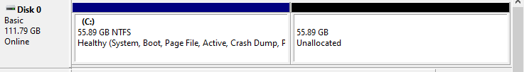
Now, Windows is setup and configured correctly, its time for the fun part!
Gentoo Time!
Reboot your machine back into Ventoy, and load into the Gentoo Live USB. The rest of this guide will be written in mind that you are using the Gentoo Live USB.
When prompted, enter in the keycode for your specific keymap (for me, that is uk), and wait for Gentoo to load up and you get into a shell prompt.
Set Up Internet Access
If you are on ethernet, you can skip this step. However, for my fellow wifi enthusiast, follow the following steps to get connected to your wifi network.- Run the following command to find your wifi card.
The command should output an interface name that is followed by
livecd ~ # iwconfigIEEE 802.11- thats your wireless interface, write it down. - Run the following command to find the ESSIDs (network names) the wireless card can run, replacing "YOUR_WIFI_INTERFACE_HERE" with the interface name obtained in the previous step.
You should be able to see the network name of the wifi network you wish to connect too.
livecd ~ # iwlist YOUR_WIFI_INTERFACE_HERE scan | grep ESSID - Add your wifi networks credentials using this command, replacing YOUR_WIFI_NETWORK with your wifi network's ESSID, and YOUR_WIFI_PASSWORD with the password of your network.
livecd ~ # wpa_passphrase YOUR_WIFI_NETWORK YOUR_WIFI_PASSWORD | tee /etc/wpa_supplicant.conf - Connect to your wifi network using the following command replacing "YOUR_WIFI_INTERFACE_HERE" with your interface name.
It should spit out
livecd ~ # wpa_supplicant -B -c /etc/wpa_supplicant.conf -i YOUR_WIFI_INTERFACE_HERESuccessfully initialized wpa_supplicant - Done! Run a Ping command to ensure you can access the outside world.
livecd ~ # ping google.com
Now, lets jump into the main cheese and biscuits. Grab some cheese and biscuits actually, and get comfortable, this is gonna be a long process.
Most of this will be ripped from the Gentoo Wiki.. However, this guide will be a more focused, full guide to get from TTY > Full KDE Desktop will all the trimmings, while dualbooting Windows, compared to the Gentoos wiki being more generic. You are free to use either wikis, or both.
Lets get started!
Prepare Disks!
Run the following to get the storage devices detected by the system - make double sure you pick out the drive that corresponds to the drive you want to install Gentoo onto!
livecd ~ # lsblklivecd ~ # cfdisk MY_DRIVECreate Two New Partitions in the empty space we created in Windows before hand.:
- Swap Partition, about the same size as RAM.
- Root Partition, rest of the disk
Make the swap partition a Swap type, and write and quit cfdisk.Once back in the terminal prompt, run lsblk again to identify which partition is the swap and root, and note this down - it'll come in handy a lot later!
livecd ~ # lsblkRun the following three commands to format the two new parititons and setup swap
livecd ~ # mkfs.ext4 /dev/YOUR_ROOTlivecd ~ # mkswap /dev/YOUR_SWAPlivecd ~ # swapon /dev/YOUR_SWAPMount the root partition using the following command
livecd ~ # mount /dev/YOUR_ROOT /mnt/gentooChange into the directory of your new mounted root
livecd ~ # cd /mnt/gentooInstalling Stage3
Now we can install the Stage3 tarball, that will contain the foundation of our new Gentoo install. There are many foundations - those who want no desktop, or looking to run a desktop, those wanting to use a different init system or CPU architectures e.t.c. For this guide, we want a desktop on systemd and AMD64. To get the latest tarball, we can go over to https://www.gentoo.org/downloads/, and copy the link on "Stage3 desktop profile | systemd."
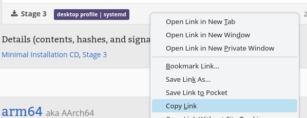Back in our terminal, we will paste in the following command to grab us this tarball, where STAGE3_DOWNLOAD_LINK is the link we copied from earlier.
livecd ~ # wget STAGE3_DOWNLOAD_LINKNow, we could just assume it all downloaded properly - but lets be safe rather than sorry! Run the following command to get the SHA512 signature and compare it to the tar.xz we just downloaded.
livecd ~ # wget STAGE3_DOWNLOAD_LINK.sha256livecd ~ # sha256sum --check YOUR_TAR_FILE.sha256You should get a:
YOUR_TAR_FILE : OKNow the fun (and slightly long) part - copy in the next command to extract the stage3 file.
livecd ~ # tar xpvf stage3-*.tar.xz --xattrs-include='*.*' --numeric-ownerConfiguring Compilation
Now, we can start editing the big important make.conf file - the file that dictate how the software we download later will be compiled. Make sure you take care editing this file! Open up the file using whatever text editor you desire- I will use Vi, but if you hate God you can use Emacs or Nano.
livecd ~ # vi /mnt/gentoo/etc/portage/make.confIn COMMON_FLAGS, add the following:
COMMON_FLAGS="-march=native -O2 -pipe"MAKEOPTS will define how many threads will be used to compile our software - a good rule of thumb is for the number of jobs is either the number of threads in your PC or the amount of memory in GBs you have divide by 2, whichever is lower. The load-average will be the job count + 2.
On my machine, I will have 4 threads and 8GBs, so will make my job count 4 and my load count 6, for example.
Add the following line to your make.conf, substituting 4 and 6 with the appropriate number of jobs/load averages for your machine:
MAKEOPTS="-j4 -l6"Save and exit the file. Lets move onto the next step!
Entering New System
Now we have the configuration for compiling our software, we can enter our new environment. To do so, we need to copy over our DNS info, then chroot into the new environment. To do so, enter in the following two commands.
livecd ~ # cp --dereference /etc/resolv.conf /mnt/gentoo/etc/NOTE THE FOLLOWING COMMAND WILL NOT WORK IF YOU ARE NOT USING OFFICIAL GENTOO INSTALL MEDIA - PLEASE LOOK HERE IF YOU ARE NOT DOING SO
livecd ~ # arch-chroot /mnt/gentooYou should now see your prompt change to
livecd / #To initalize entering in the new environment, enter in the next 2 commands.
livecd / # source /etc/profile livecd / # export PS1="(chrOwOt) ${PS1}" Preparing Bootloader
These steps will be different if your system is either UEFI (has an EFI partition) or Legacy BIOS (doesn't have an EFI partition). My machine is so ancient it uses Legacy BIOS, but for conviences sake I will leave both sets of commands needed to mount the boot
UEFI Systems
livecd / # mkdir /efi livecd / # mount /dev/EFI_PARTITON /efi Legacy BIOS Systems
No Additional Steps Needed at this point.Preparing Portage
Portage will be our package management system, managing compilation, updating and removing software from our system.The first thing we shall do is sync with portage, to make sure the software repository is up to date. This can be done by:
livecd / # emerge-webrsync livecd / # emerge --sync Now we need to pick our profile - i.e, some extra building blocks to help build the system we want in the end. Since we want to use KDE Plasma with systemd on a desktop, we can pick option 28 - amd64/23.0/desktop/plasma/systemd
livecd / # eselect profile set 28 Now for the fun part - configuring USE! These are the flags that define which features we do and do not want for the software we are downloading. To set the USE flags, open the make.conf file again.
livecd / # vi /etc/portage/make.confFor our KDE/Wayland/Pipewire/Systemd setup, copy in the following USE flags - you are however, free to tweak them as you see fit!
USE="-gtk -gnome -cdr -dvd -browser-integration -crash-handler -firewall -handbook -sdk -thunderbolt -wacom -wallpapers -webengine -ieee1394 -jack-client accessibility colord bluetooth qt5 kde alsa crypt cups desktop-portal discover display-manager flatpak grub kwallet legacy-systray networkmanager plymouth pulseaudio sddm smart systemd X xwayland dbus ffmpeg sound-server wifi policykit jack-sdk pipewire-alsa extra dracut mount python"Now we need to add the CPU/GPUs we will be using to our Portage configuration.
For our CPUs, run the following commands to download the program that will parse and then add our supported CPU Flags.
livecd / # emerge --ask --oneshot cpuid2cpuflagslivecd / # echo "*/* $(cpuid2cpuflags)" > /etc/portage/package.use/00cpu-flagsFor our GPUS, this will depend on if you use Intel, AMD, or NVIDIA. I am using Intel Haswell (Gen 7) iGPU on this machine, for AMD see here, and for Nvidia (FOSS) see here, and for Nvidia (Proprietary) see here.
In any case, add the following line in make.conf, with your specific video card flags.
VIDEO_CARDS="intel"Next, we will add to out make.conf, we need to add the software liscenses we want to use. Since the FSF dont have a gun to my head, I will add it to allow any license in the make.conf.
ACCEPT_LICENSE="*"Now, lets update emerge to make use of all of these lovely new flags. This will take a long time, especially since - it took me around 8 hours on my shitty Elitebook!
livecd / # emerge --ask --verbose --update --deep --newuse @worldThen remove unneeded dependencies by running the following
livecd / # emerge --depclean Configuring Locales / Keymaps
First, lets configure which time zone we are in. First, lets check the timezone file to see what options we have.
Generally, the timezone for you will be your capital city in your country, in the continent you live in.
livecd / # ls -l /usr/share/zoneinfoSince I live in the UK, it will therefore be in Europe/London. To tell systemd to use this, make a symbolic link between this timezone and the file it looks for, for localetime, replacing YOUR_TIME_ZONE with your specific time zone.
livecd / # ln -sf /usr/share/zoneinfo/YOUR_TIME_ZONE /etc/localtimeTo configure locales, first check the below file for the possible locales that can be used
livecd / # vim /usr/share/i18n/SUPPORTEDlivecd / # vim /etc/locale.gen
en_GB ISO-8859-1
en_GB.UTF-8 UTF-8
Save and exit that file, and run the command to generate the new locales.
livecd / # locale-genNow update your new locales.
livecd / # env-update && source /etc/profile && export PS1="(chrOwOt) ${PS1}"Installing a Kernel.
While we have a lot of useful tools so far, we are missing the most important of all - the kernel! While we could configure our own kernel and you are more than welcome to do so, for this guide I will fall back and use the binary kernel for the sake of time.
First, download the firmware needed by the kernel:
livecd / # emerge --ask linux-firmware sof-firmwareFor Intel CPUs, download microcode updates too:
livecd / # emerge --ask intel-microcodeNow, lets install the Kernel
livecd / # emerge --ask gentoo-kernel-binConfiguring filesystems.
While we could manually edit our own fstab (the partitions Linux will automount while booting) ourselves, we could nab the tool Arch Linux uses to do this automatically for its install guide.
First, download git so we can download the fstab generation script from GitHub
livecd / # emerge --ask dev-vcs/gitNow clone the git repo that contains genfstab
livecd / # cd tmplivecd / # git clone https://github.com/glacion/genfstab.gitlivecd / # cd genfstablivecd ~ # /mnt/gentoo/tmp/genfstab/genfstab -U /mnt/gentoo >> /mnt/gentoo/etc/fstabSwitch back to the TTY in our new install chroot (Ctrl + Alt + F1)
Setting System information
Since we are running systemd, we can run the following commands to setup systemd for our system.
livecd / # systemd-machine-id-setuplivecd / # systemd-firstboot --promptlivecd / # systemctl preset-all --preset-mode=enable-onlyTo make using the terminal slightly more tolerable later, we can download auto-completion tools for our shell, bash.
livecd / # emerge --ask bash-completionTo enable time sync using systemd, run the following command
livecd / # systemctl enable systemd-timesyncd.serviceOther useful tools we can download now includes udev-rules for dealing with some storage device types, and wpa_supplicant so we have a fallback to connect to the interent later.
livecd / # emerge --ask iw wpa_supplicant io-scheduler-udev-rulesConfiguring the bootloader
This step will be slightly different deepening on if you are using BIOS or UEFI systems.
If you are on UEFI, run the following command (BIOS Chads do not need to do this.)
livecd / # echo 'GRUB_PLATFORMS="efi-64"' >> /etc/portage/make.confBoth UEFI and BIOS users, run the following command to grab grub and os-prober.
livecd / # emerge --ask grub os-prober
Now run the following commands (depending on if you are on UEFI or BIOS)
UEFI Systems
livecd / # grub-install --efi-directory=/efi
BIOS Systems
livecd / # grub-install /dev/YOUR_DRIVEBy default, GRUB will not search for other partitions - including our Windows 10 partition. To allow it to do so, open up the following file
livecd / # vim /etc/default/grubproberAnd add the following line at the end
GRUB_DISABLE_OS_PROBER=false Now we can tell grub to configure itself, includin which partitions it lists at boot time.
livecd / # grub-mkconfig -o /boot/grub/grub.cfg Daily Use Administration
Now the fun part - adding your user and adding in the software we will use on a desktop - that means KDE, Pipewire e.t.c!
First lets add a normal user and give them a password. You can replace zelda with whatever name you desire.
livecd / # useradd -m -G users,wheel,audio,video -s /bin/bash zeldalivecd / # passwd zeldaAs a security measure, lets disable root login.
livecd / # passwd -dl rootNow, to let our user perform access that needs super user access, lets install sudo and configure it to allow our user to run commands as super user.
livecd / # emerge --ask sudoQuick aside - if you are using vim/emacs, you might notice sudoedit doesn't work and complains about not having nano available eselect editor list eselect editor set 1 . /etc/profile
Open up the sudo configuration file
livecd / # sudoedit /etc/sudoers # %wheel ALL=(ALL:ALL) ALLSave and exit this file.Now for the fun part - installing our audio system and Desktop environment. Be warned, this will take a very long time to compile, so hang in there, and grab a beverage while it does so.
Run the following command to start the big merge:
livecd / # emerge --ask pipewire wireplumber plasma-meta konsole kde-apps/dolphin Now, to exit the live medium, run the following commands to exit the chroot, unmount all partitions and reboot the computer
livecd / # exitlivecd ~ # cdlivecd ~ # umount -l /mnt/gentoo/dev{/shm,/pts,} livecd ~ # umount -R /mnt/gentoo livecd ~ # reboot Remove USB stick while the PC is rebooting - you should now be greeted by GRUB!
Reboot into both OSes, then once in Gentoo log in with your users credentials and run the following command to enable SDDM
zoey@zelda ~ $ sudo systemctl enable --now sddm zoey@zelda ~ $ sudo systemctl enable --now -user wireplumber pipewire pipewire-pulse zoey@zelda ~ $ sudo systemctl enable --now NetworkManager bluetoothFinally, add Flathub to your flatpak repos so you can use flatpaks.
zoey@zelda ~ $ flatpak remote-add --user --if-not-exists flathub https://flathub.org/repo/flathub.flatpakrepoDone! 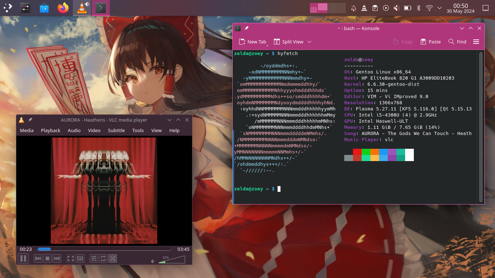
Extras For Gentoo
Install Hyfetch :3
zoey@zelda ~ $ sudo emerge --ask hyfetchUse Samba Shares
Open the make.conf file again, and add the samba USE flag.zoey@zelda ~ $ sudo vim /etc/portage/make.confUSE="... samba"zoey@zelda ~ $ sudo emerge -avtDUu @worldzoey@zelda ~ $ sudo emerge --ask kio-extrasInstall Spectacle For Screenshots
zoey@zelda ~ $ sudo emerge --ask spectacleInstall MPV and JuK for multimedia.
zoey@zelda ~ $ sudo emerge --ask mpv jukInstall Gwenview or qView for looking at photos.
For Gwenview:
zoey@zelda ~ $ sudo emerge --ask gwenviewzoey@zelda ~ $ flatpak install qView Install Steam
This is somewhat involved. The easy route is just use the Flatpak, but depeneding on your system it could have issuses of its own.
To get native Steam, we need to add an overlay (a seperate repo with its own packages.) Run the below command
zoey@zelda ~ $ sudo emerge --ask --noreplace app-eselect/eselect-repositoryEnable the steam repo using the following command.
zoey@zelda ~ $ sudo eselect repository enable steam-overlayThen sync the repos.
zoey@zelda ~ $ sudo emerge --syncSteam needs its own special USE flags to allow it to use 32-bit libraries. Open up the following package
zoey@zelda ~ $ sudo vim /etc/portage/package.use/steamAnd copy and paste in the following.
x11-libs/libX11 abi_x86_32
x11-libs/libXau abi_x86_32
x11-libs/libxcb abi_x86_32
x11-libs/libXdmcp abi_x86_32
virtual/opengl abi_x86_32
media-libs/mesa abi_x86_32
dev-libs/expat abi_x86_32
media-libs/libglvnd abi_x86_32
sys-libs/zlib abi_x86_32
x11-libs/libdrm abi_x86_32
x11-libs/libxshmfence abi_x86_32
x11-libs/libXext abi_x86_32
x11-libs/libXxf86vm abi_x86_32
x11-libs/libXfixes abi_x86_32
app-arch/zstd abi_x86_32
sys-devel/llvm abi_x86_32
x11-libs/libXrandr abi_x86_32
x11-libs/libXrender abi_x86_32
dev-libs/libffi abi_x86_32
sys-libs/ncurses abi_x86_32
dev-libs/libxml2 abi_x86_32
dev-libs/icu abi_x86_32
sys-libs/gpm abi_x86_32
virtual/libelf abi_x86_32
dev-libs/elfutils abi_x86_32
app-arch/bzip2 abi_x86_32
dev-libs/nspr abi_x86_32
dev-libs/nss abi_x86_32
net-libs/libndp abi_x86_32
x11-libs/extest abi_x86_32
dev-libs/libevdev abi_x86_32
dev-libs/wayland abi_x86_32
virtual/rust abi_x86_32
dev-lang/rust-bin abi_x86_32
x11-libs/libpciaccess abi_x86_32
sys-devel/clang abi_x86_32
media-libs/fontconfig abi_x86_32
sys-libs/libudev-compat abi_x86_32
media-libs/libpulse abi_x86_32
media-libs/libsndfile abi_x86_32
net-libs/libasyncns abi_x86_32
sys-apps/dbus abi_x86_32
dev-libs/glib abi_x86_32
dev-libs/libpcre2 abi_x86_32
sys-apps/util-linux abi_x86_32
media-libs/flac abi_x86_32
media-libs/libogg abi_x86_32
media-libs/libvorbis abi_x86_32
media-libs/opus abi_x86_32
media-sound/lame abi_x86_32
media-sound/mpg123-base abi_x86_32
media-libs/freetype abi_x86_32
media-libs/libpng abi_x86_32
virtual/libintl abi_x86_32
virtual/libudev abi_x86_32
sys-apps/systemd-utils abi_x86_32
sys-libs/libcap abi_x86_32
sys-libs/pam abi_x86_32
virtual/libiconv abi_x86_32
x11-libs/xcb-util-keysyms abi_x86_32
dev-libs/libgpg-error abi_x86_32
app-arch/lz4 abi_x86_32
dev-libs/libgcrypt abi_x86_32
sys-apps/systemd abi_x86_32
Save and exit.
To accept installing the steam package, open the following file.
zoey@zelda ~ $ sudo vim /etc/portage/package.accept_keywords/steam*/*::steam-overlay
games-util/game-device-udev-rules
sys-libs/libudev-compatSave and exit.
We need to re-emerge ncurses with gpm support.
zoey@zelda ~ $ sudo USE="-gpm" emerge --ask --oneshot sys-libs/ncurses Install Steam:
zoey@zelda ~ $ sudo emerge --ask games-util/steam-launcherRe-emerge gpm and ncurses
zoey@zelda ~ $ sudo emerge --ask --oneshot sys-libs/ncurses gpmResource Monitoring
To install HTOP:
zoey@zelda ~ $ sudo emerge --ask htop